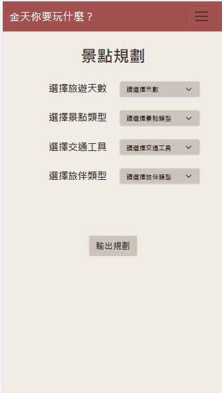

金天你要玩什麼？
首頁
系統畫面
組員資料
系統畫面

景點規劃
景點規劃的介面，使用者可以選擇旅遊天數、偏好的景點類型、交通工具和同行的旅伴類型，依靠不同的情況來排出最適當的行程。
進入了解
交通資訊
交通資訊輸出頁面，在這裡使用者可以查詢需要使用的交通工具和交通工具的即時動態。下圖為汽機車租車資訊的頁面。
進入了解
聊天機器人
聊天機器人的頁面，使用者可以加入<水獺阿金>的Line好友，可以直接向機器人詢問在App上找不到的資訊，讓它為使用者排憂解惑，成為使用者旅遊途中最忠實的夥伴。
進入了解
購物商城
依據在地不同的店家進行分類，使用者可根據喜好點進不同的店家進行選購也可以選擇直接搜索。下圖則是進入商家後的頁面，頁面中呈現店家兜售的各種商品。
進入了解
© Copyright 2022 by 10735145 張世澄 10744207 江俊佑 10744211 鄭家瑋 10744219 劉晏伶 ©